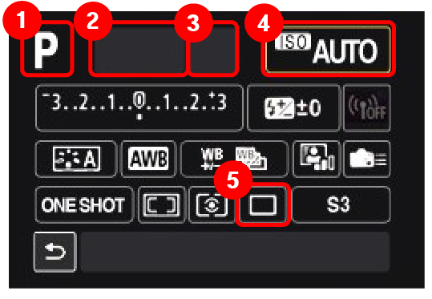

|  | 1.모드 |
현재 설정되어있는 모드를 알아볼 수 있는 부분. AUTO(P) 모든설정을 상황에 맞게 자동으로 조절해준다. 초보자에게 추천. TV 셔터스피드 중점 촬영 모드.빠른 피사체를 촬영할 때 사용함. AV 조리개 중점 촬영 모드.반 자동모드라고도 한다. M 모든 설정을 수동으로 해야하는 모드. |
|
|---|---|---|---|
| 2.셔터스피드 |
촬영의 속도를 설정하는 부분. 숫자가 높을 수록 빠른 피사체를 잘 캐치함.그리고 숫자가 높아질 수록 사진이 어두워짐. |
||
| 3.조리개 |
빛이 들어오는 양을 결정하는 부분. 숫자가 낮을 수록 많은 빛을 가져오고,숫자가 높을 수록 빛을 덜 받아들인다. |
||
| 4.ISO |
카메라의 빛 감도를 설정하는 부분. 숫자가 낮을 수록 빛을 적게 받아들이고,선명한 사진을 얻을 수 있다. 반대로 숫자가 높으면 어두운상황에서도 밝은 사진을 얻을 수 있고, 대신 노이즈가 낀 사진을 얻을 수 있다. |
||
| 5.촬영 방식 |
촬영 방식을 설정하는 부분. 한번만 촬영할지,연사촬영할지 뿐만아니라 저소음촬영,고속촬영 등을 설정 할 수 있다. |